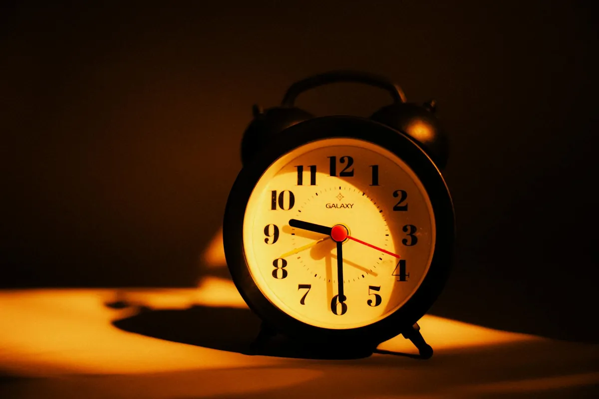

Unlock Your Metabolism: The Sleep Secrets for Sustainable Weight Loss

Key takeaways
- I remember those days vividly.
- The scale stubbornly refusing to budge, no matter how much I cut back on calories or how many extra miles I ran.
- Track what feels sustainable and adjust gradually.
I remember those days vividly. The scale stubbornly refusing to budge, no matter how much I cut back on calories or how many extra miles I ran. I felt exhausted, frustrated, and honestly, a bit hopeless. It wasn't until I started digging into the science of sleep that I realized I was missing a huge piece of the puzzle for sustainable weight loss. Unlocking your metabolism: the sleep secrets for sustainable weight loss isn't just a catchy phrase; it's a fundamental truth I learned the hard way.
You see, when I wasn't getting enough quality sleep, my body went into a kind of survival mode. My hormones got all out of whack, my appetite signals went haywire, and my metabolism seemed to grind to a halt. It felt like I was fighting an uphill battle, and my sleep habits were sabotaging every effort I made.
The connection between sleep and metabolism is profound. During deep sleep, your body is busy repairing and rebuilding. It's also when crucial hormones that regulate appetite and energy expenditure are produced and balanced. When you skimp on sleep, you disrupt this delicate process. You end up with higher levels of cortisol (the stress hormone), which can encourage fat storage, particularly around your belly. Plus, your ghrelin (the hunger hormone) levels spike, while leptin (the satiety hormone) levels drop. This means you feel hungrier and less full, making those late-night cravings almost impossible to ignore.
I used to think that if I was just tired, I could push through it. I’d chug another cup of coffee and tell myself it was fine. But my body was sending me clear signals that it wasn't. My energy levels were low, my focus was shot, and my cravings for sugary, high-carb foods were through the roof. This cycle is a classic trap that many of us fall into, and it's a major roadblock for anyone trying to manage their weight effectively.
Understanding this was a game-changer for me. It wasn't about punishing myself with extreme diets or workouts; it was about nurturing my body, and that starts with sleep. Improving your sleep hygiene can have a direct, positive impact on your metabolism and your ability to reach your weight loss goals. It's about working *with* your body, not against it.
So, what can you actually do? It’s not about achieving perfect sleep overnight, but about making consistent, small improvements. One of the first things I tackled was my bedtime routine. I started by creating a buffer zone between my day and my sleep. This meant putting away screens at least an hour before bed. The blue light emitted from phones, tablets, and computers can trick your brain into thinking it's still daytime, suppressing melatonin production, the hormone that signals sleep. Instead, I’d read a physical book, listen to a calming podcast, or do some gentle stretching. This simple shift helped signal to my body that it was time to wind down.
The 2-Minute Win
Right now, grab a glass of water and drink it. Hydration is key for overall health and can even impact your energy levels, which indirectly affects your sleep quality. Keep a water bottle by your bedside for easy access throughout the night.
Another strategy that made a huge difference for me was establishing a consistent sleep schedule. This means going to bed and waking up around the same time every day, even on weekends. I know, it sounds rigid, but your body thrives on routine. This helps regulate your internal body clock, or circadian rhythm, which is deeply intertwined with your metabolism. When your circadian rhythm is stable, your hormones function optimally, and your metabolism runs more smoothly. It’s a foundational element for unlocking your metabolism: the sleep secrets for sustainable weight loss.
The pro-tip I learned is to pay attention to your body's natural cues. If you're feeling groggy mid-afternoon, it might be a sign that your sleep quality needs attention, not that you need another caffeine boost. Prioritizing rest can actually increase your productivity and energy throughout the day.
Creating a sleep sanctuary is also vital. My bedroom became a haven for rest. I made sure it was dark, quiet, and cool. Investing in blackout curtains and earplugs was a small price to pay for significantly better sleep. I also made sure my mattress and pillows were comfortable and supportive. A comfortable sleep environment minimizes disruptions and allows for deeper, more restorative sleep. This is crucial for hormone regulation and metabolic function. For more on creating a healthy sleep environment, check out this related healthy tip.
I also learned to be mindful of what I consumed, especially in the hours leading up to bedtime. Avoiding heavy meals, caffeine, and alcohol close to sleep time is essential. Caffeine is a stimulant that can linger in your system for hours, and alcohol, while it might make you feel drowsy initially, disrupts sleep architecture, leading to poorer quality rest. Even large amounts of fluids can lead to nighttime awakenings. This is just one aspect of a holistic approach to health; you can find another practical guide on healthy eating habits.
For those who struggle with falling asleep or staying asleep, I’ve found that incorporating a magnesium supplement can be incredibly helpful. Magnesium plays a role in regulating neurotransmitters that calm the nervous system and promote sleep. I started taking a magnesium glycinate supplement about an hour before bed, and it made a noticeable difference in my ability to drift off and stay asleep. It’s a gentle way to support your body’s natural sleep processes. This is part of a broader wellness insight into how supplements can aid your journey, similar to this wellness insight.
It's also important to manage stress, as it's a major sleep disruptor. I started incorporating mindfulness and deep breathing exercises into my evening routine. Even just five minutes of focused breathing can help quiet a racing mind and prepare you for sleep. Finding ways to de-stress is key to staying consistent with your sleep goals. You can explore more sleep guides to help you stay consistent with this.
Remember, this is an ongoing journey. There will be nights when sleep doesn't come easily, and that's okay. The goal is progress, not perfection. By focusing on improving your sleep hygiene and understanding its profound impact on your metabolism, you're setting yourself up for sustainable weight loss and overall better health. Keep at it, and be patient with yourself. You're building a foundation for long-term success, and it all starts with a good night's sleep. To help you stay consistent with these habits, consider this guide to staying consistent.
Educational only — not medical advice.
Disclosure: This page may contain affiliate links.
Recommended Reading
- Unlock Better Sleep: Natural Tips for Deeper Rest & Energy
- Beyond Calories: The Real Reason Bread Might Be Making You Gain Weight
- Unlock a Healthier Weight: 2 Easy Eating Habits Revealed by Science
More in sleep
 sleep
sleepUnlock Better Sleep: Essential Sleep Hygiene Tips for a Healthier You
Struggling with sleep? Discover essential sleep hygiene tips for a healthier you. Learn science-backed strategies to unl
Read article →
sleepBiohacking Your Sleep: The Ultimate Guide to Better Sleep and Peak Performance
Discover practical biohacking strategies for better sleep and peak performance. Learn how busy Americans can optimize sl
Read article →Related posts
sleepUnlock Better Sleep: Essential Sleep Hygiene Tips for a Healthier You
Struggling with sleep? Discover essential sleep hygiene tips for a healthier you. Learn science-backed strategies to unl
Read article →Biohacking Your Sleep: The Ultimate Guide to Better Sleep and Peak Performance
Discover practical biohacking strategies for better sleep and peak performance. Learn how busy Americans can optimize sl
Read article → sleep
sleepBlue Light Blocking Glasses for Better Sleep & Reduced Eye Strain: My Secret Weapon
Struggling with sleep and eye strain? Discover how blue light blocking glasses can help. Learn how they improve sleep qu
Read article →